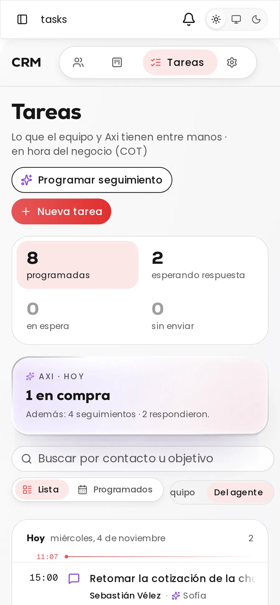
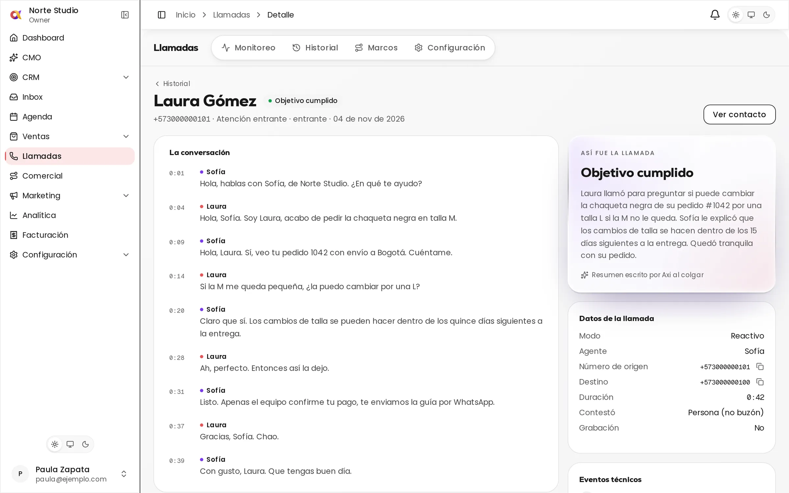
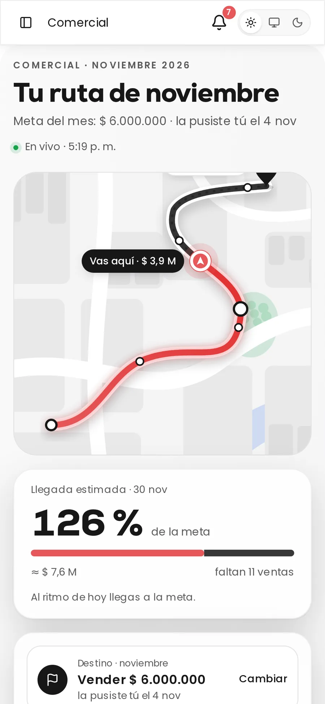

anoche te escribieron.¿quién respondió?


redes, whatsapp y tienda,una sola bandeja.
{{WA}}WhatsApp{{IG}}Instagram{{MS}}Messenger{{SH}}Shopify
Teléfono


el seguimientose hace solo.


también contestael teléfono.


recupera las ventasque se iban.


busca clientespor ti.


sabes sillegas.
Tu meta del mes, el camino que falta y lo que toca hoy.

